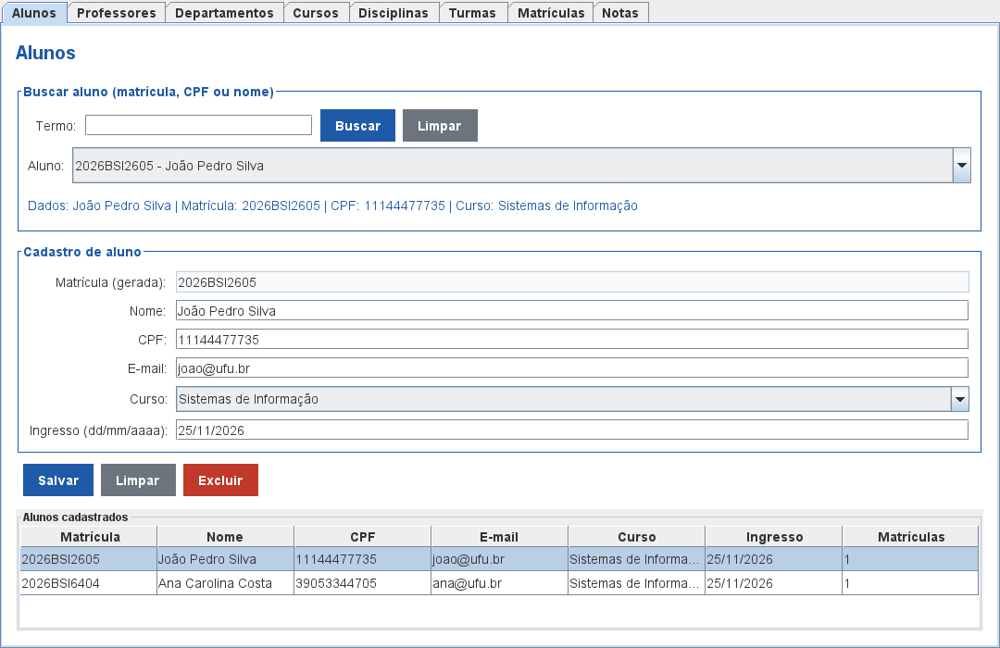
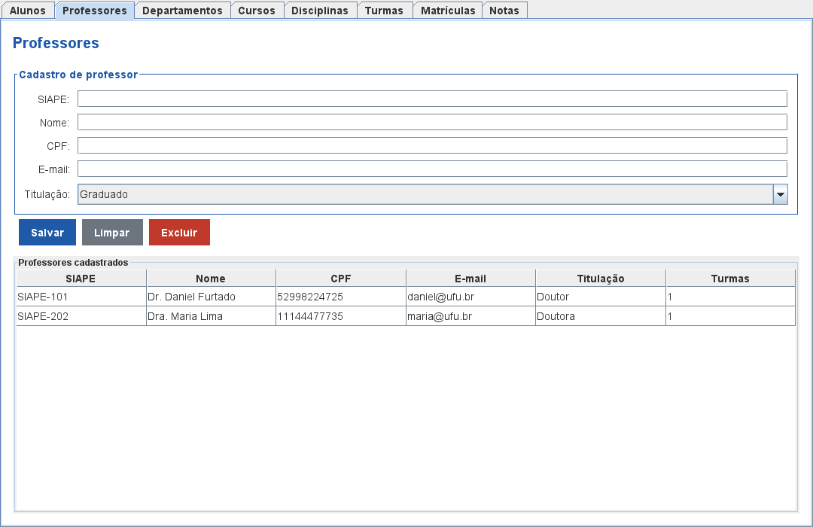
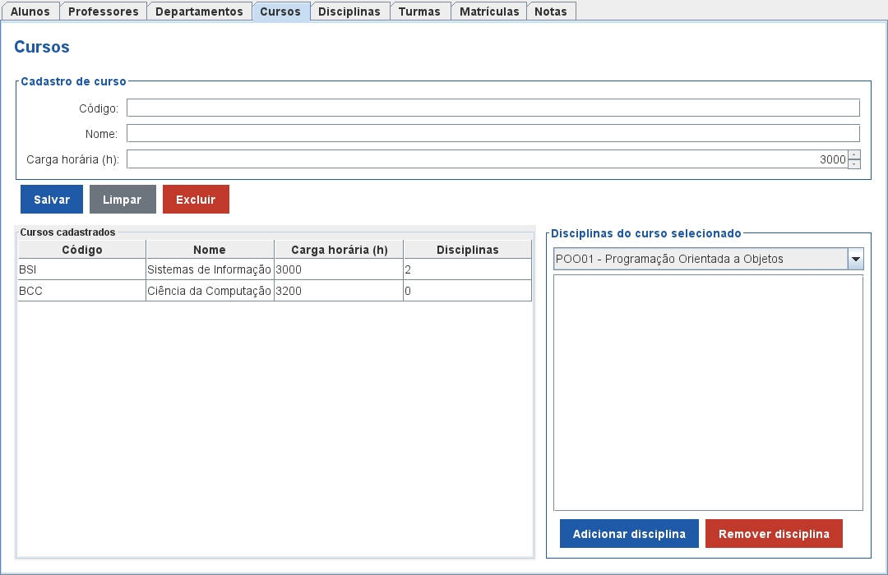
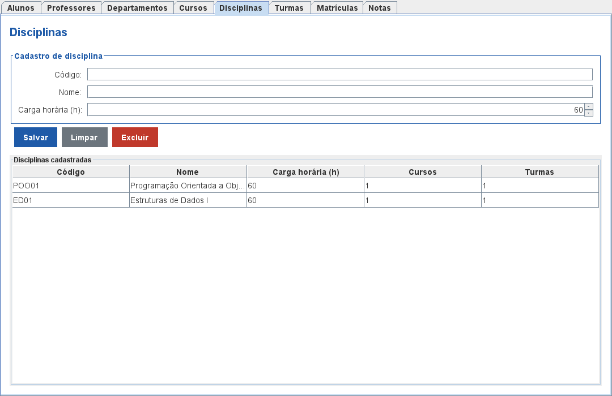
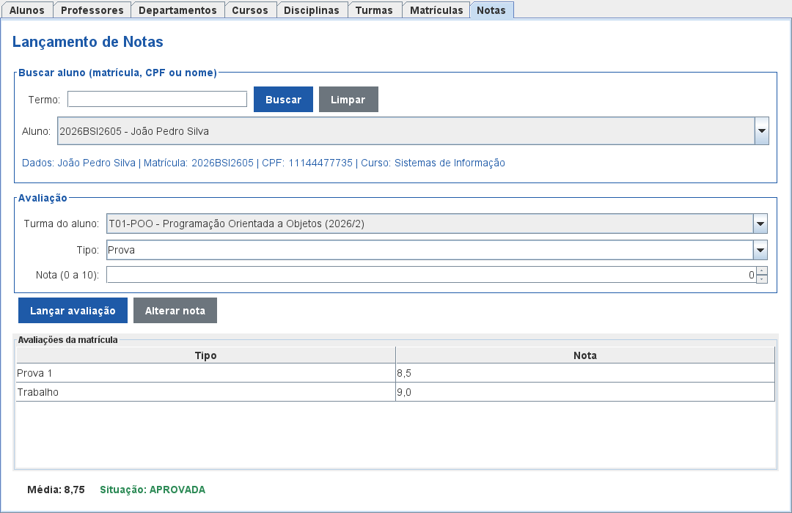

Figura 3 – Tela de gerenciamento de Departamentos

Fonte: Elaborado pelos autores (2026).
UNIVERSIDADE FEDERAL DE UBERLÂNDIA (UFU)
FACULDADE DE COMPUTAÇÃO (FACOM)
PROGRAMAÇÃO ORIENTADA A OBJETOS
Grupo: Integrantes do Projeto Gestão Universitária
Projeto Final da Disciplina de Programação Orientada a Objetos
Uberlândia – MG
2026
O gerenciamento acadêmico de uma instituição de ensino superior envolve o controle integrado de alunos, professores, departamentos, cursos, disciplinas, turmas, matrículas e avaliações. Quando essas informações são mantidas de forma isolada ou manual, aumentam os riscos de inconsistências, como matrícula duplicada em uma mesma turma, ultrapassagem do limite de vagas ou erros no cálculo de médias finais.
Diante desse cenário, este trabalho apresenta o desenvolvimento do Sistema de Gestão
Universitária, construído integralmente em linguagem Java com interface gráfica em
javax.swing e persistência de dados em arquivo binário. O sistema modela o domínio
acadêmico aplicando rigorosamente os pilares da Programação Orientada a Objetos (POO),
assegurando modularidade, reutilização de código, validação de regras de negócio e
interatividade para o usuário final (Secretaria Acadêmica).
A arquitetura do sistema foi organizada em pacotes que separam responsabilidades de domínio,
persistência, exceções e interface gráfica: br.edu.universidade.model (entidades),
br.edu.universidade.persistence (leitura e gravação em disco),
br.edu.universidade.exception (exceções de negócio) e
br.edu.universidade.view (telas Swing).
A classe raiz Universidade centraliza as coleções de alunos, professores,
departamentos, cursos, disciplinas e turmas, permitindo a persistência em cascata de todo o
grafo de objetos. Os diagramas completos de Casos de Uso e de Classes UML encontram-se no
repositório oficial em docs/uml/casos_de_uso.pdf e
docs/uml/gestao_universidade - DIAGRAMA DE CLASSES.pdf.
Todos os conceitos exigidos pela proposta do projeto foram implementados diretamente nas classes do domínio e integrados à interface gráfica. A seguir, são apresentados os trechos reais do código-fonte do projeto.
A herança foi aplicada por meio da superclasse abstrata Pessoa, que concentra os
atributos comuns (nome, cpf e email) com visibilidade
protected. As classes Aluno e Professor estendem
Pessoa utilizando extends e reutilizam seu construtor via
super(nome, cpf, email).
Código 1 – Herança em Aluno.java (extensão de Pessoa)
public class Aluno extends Pessoa implements Serializable {
private static final long serialVersionUID = 1L;
private String matricula;
private Date dataIngresso;
private Curso curso;
private List<Matricula> matriculas;
public Aluno(String nome, String cpf, String email, Date dataIngresso, Curso curso) {
super(nome, cpf, email);
this.dataIngresso = dataIngresso;
this.curso = curso;
this.matriculas = new ArrayList<>();
}
}
A classe Pessoa é declarada como abstract e define o método abstrato
getIdent(), obrigando cada subclasse a fornecer sua própria forma de identificação.
Em Aluno, getIdent() retorna o código de matrícula; em
Professor, retorna o registro SIAPE, caracterizando o polimorfismo por sobrescrita
(@Override).
Código 2 – Método abstrato em Pessoa.java e sobrescrita polimórfica em Aluno.java e Professor.java
// Em Pessoa.java
public abstract String getIdent();
// Em Aluno.java
@Override
public String getIdent() {
return this.matricula;
}
// Em Professor.java
@Override
public String getIdent() {
return this.siape;
}
Foi criada a interface Exibivel para padronizar a representação textual resumida
das entidades do sistema. Ela é implementada por Pessoa (herdada por
Aluno e Professor), Curso, Disciplina e
Turma, permitindo que objetos distintos sejam tratados uniformemente pelo contrato
exibirDados().
Código 3 – Definição da interface Exibivel.java
public interface Exibivel {
String exibirDados();
}
A agregação ocorre em Universidade, que mantém coleções de
Aluno, Professor, Curso, Disciplina,
Turma e Departamento, entidades que podem existir e ser gerenciadas
de forma independente. Já a composição é aplicada entre Matricula e
Avaliacao: cada Matricula instancia e gerencia internamente sua lista
de objetos Avaliacao por meio de adicionarAvaliacao(tipo, nota); caso
a matrícula seja removida, suas avaliações deixam de existir.
Código 4 – Composição entre Matricula e Avaliacao em Matricula.java
public class Matricula implements Serializable {
private final Aluno aluno;
private final Turma turma;
private final List<Avaliacao> avaliacoes = new ArrayList<>();
public void adicionarAvaliacao(String tipo, double nota) throws NotaInvalidaException {
avaliacoes.add(new Avaliacao(tipo, nota));
}
public double calcularMedia() {
return avaliacoes.stream()
.mapToDouble(Avaliacao::getNota)
.average()
.orElse(0.0);
}
}
Todas as entidades protegem seus atributos com modificadores private ou
protected, expondo acesso controlado via métodos getters e setters
com validações de integridade. Em Turma, por exemplo, setVagas(int vagas)
impede que o número de vagas seja menor ou igual a zero ou inferior ao total de alunos já
matriculados.
Para garantir robustez e impedir estados inválidos, o pacote
br.edu.universidade.exception define a hierarquia baseada em
UniversidadeException, contendo: TurmaCheiaException,
MatriculaDuplicadaException, NotaInvalidaException,
CpfInvalidoException e AlunoNaoEncontradoException. Na camada visual, a
classe utilitária Componentes captura essas exceções e apresenta mensagens
amigáveis em caixas de diálogo JOptionPane.
Código 5 – Exceção customizada NotaInvalidaException.java e tratamento na interface
// NotaInvalidaException.java
public class NotaInvalidaException extends UniversidadeException {
private static final long serialVersionUID = 1L;
private final double notaInformada;
public NotaInvalidaException(double notaInformada) {
super("Nota inválida: " + notaInformada + ". A nota deve estar entre 0 e 10.");
this.notaInformada = notaInformada;
}
}
// Componentes.java (camada view)
public static void mostrarErro(Component pai, Exception ex) {
String titulo = ex instanceof UniversidadeException || ex instanceof IllegalArgumentException
? "Dados inválidos" : "Erro";
JOptionPane.showMessageDialog(pai, ex.getMessage(), titulo, JOptionPane.ERROR_MESSAGE);
}
O projeto foi desenvolvido integralmente com bibliotecas padrão da plataforma Java (JDK) e ferramentas de automação do ecossistema Maven, conforme detalhado na Tabela 1.
| Biblioteca / Pacote | Finalidade no Sistema |
|---|---|
javax.swing |
Construção completa da interface gráfica desktop: janelas (JFrame), abas (JTabbedPane), formulários (JTextField, JComboBox, JSpinner), tabelas (JTable), menus e diálogos (JOptionPane). |
java.awt |
Gerenciadores de layout (BorderLayout, GridBagLayout, FlowLayout), paleta de cores, fontes e tratamento de eventos de botões e fechamento de janela. |
java.io |
Persistência binária em disco do grafo completo de objetos a partir da raiz Universidade, usando Serializable, ObjectOutputStream e ObjectInputStream em data/universidade.dat. |
java.util e java.time |
Estruturas de coleção (List, ArrayList, Collections, Optional) e manipulação de datas/horários de matrícula e salvamento (LocalDate, LocalTime, Year). |
java.text.Normalizer |
Normalização de texto (remoção de acentos) para permitir a busca flexível de alunos por nome, CPF ou matrícula em Universidade.buscarAluno(). |
| Maven e JUnit 5 | Gerenciamento de build/empacotamento (pom.xml) e execução de testes unitários automatizados do domínio e da persistência. |
Para executar o sistema, basta ter o JDK 17 ou superior instalado, compilar com
mvn clean package e iniciar o aplicativo com
java -jar target/gestao-universidade-1.0.jar (ou executar a classe
Main.java pela IDE). A janela principal organiza todas as operações em oito abas
na barra superior e exibe na barra inferior o botão de salvamento e o horário do último
registro salvo.
Permite cadastrar, editar, excluir e listar alunos, informando nome, CPF, e-mail, data de
ingresso e curso. O código de matrícula pode ser gerado automaticamente pela
Universidade no momento do cadastro.
Figura 1 – Tela de cadastro e listagem de Alunos

Fonte: Elaborado pelos autores (2026).
Destinada ao gerenciamento do corpo docente, permitindo cadastrar, alterar e excluir professores com nome, CPF, e-mail, registro SIAPE e titulação acadêmica.
Figura 2 – Tela de cadastro e listagem de Professores

Fonte: Elaborado pelos autores (2026).
Permite o cadastro dos departamentos acadêmicos da instituição e o vínculo de professores a cada unidade organizacional.
Figura 3 – Tela de gerenciamento de Departamentos
Fonte: Elaborado pelos autores (2026).
Possibilita criar e manter os cursos da universidade (código, nome e carga horária total), bem como visualizar as disciplinas vinculadas a cada grade.
Figura 4 – Tela de cadastro e listagem de Cursos

Fonte: Elaborado pelos autores (2026).
Gerencia o catálogo de disciplinas ofertadas (código, nome e carga horária), que serão posteriormente associadas aos cursos e às turmas semestrais.
Figura 5 – Tela de cadastro e listagem de Disciplinas

Fonte: Elaborado pelos autores (2026).
Permite abrir turmas vinculando uma disciplina, um professor responsável, o semestre letivo e a quantidade máxima de vagas, exibindo em tempo real as vagas ocupadas e disponíveis.
Figura 6 – Tela de abertura e controle de Turmas

Fonte: Elaborado pelos autores (2026).
O operador utiliza o painel de busca (por matrícula, CPF ou nome) para localizar e conferir os dados do aluno, seleciona uma turma com vagas disponíveis e clica em Matricular. Também é possível selecionar uma linha da tabela e clicar em Cancelar matrícula, liberando a vaga automaticamente. Tentativas de matrícula duplicada ou em turma lotada exibem avisos claros na tela.
Figura 7 – Aba Matrículas com busca de aluno e controle de vagas

Fonte: Elaborado pelos autores (2026).
Após buscar e confirmar o aluno no painel superior, o seletor exibe exclusivamente as turmas em que ele está matriculado. O usuário informa o tipo de avaliação e a nota (de 0 a 10) para lançar ou alterar notas. A tela calcula automaticamente a média simples e exibe a situação (APROVADA em verde para média maior ou igual a 7,0; REPROVADA em vermelho para média inferior a 7,0).
Figura 8 – Aba Notas com busca de aluno, cálculo de média e situação

Fonte: Elaborado pelos autores (2026).
Ao iniciar, o sistema carrega automaticamente o arquivo data/universidade.dat (ou
inicia uma universidade vazia na primeira execução). Durante o uso, é possível salvar pelo menu
Arquivo → Salvar (Ctrl+S) ou pelo botão da barra inferior; ao fechar a
janela, o sistema solicita confirmação para gravar as alterações.
Repositório completo no GitHub: https://github.com/ordePJoao/gestao_universidade
O desenvolvimento do Sistema de Gestão Universitária permitiu consolidar na prática os
fundamentos da Programação Orientada a Objetos em Java. A modelagem baseada em herança
(Pessoa, Aluno e Professor), interfaces
(Exibivel), composição (Matricula e Avaliacao),
exceções customizadas e encapsulamento resultou em uma base de código coesa, extensível e
alinhada aos diagramas UML planejados.
A integração entre o núcleo de domínio, a persistência binária nativa e a interface gráfica
em javax.swing entregou uma aplicação desktop funcional, com tratamento amigável
de erros e fluxo intuitivo de matrícula e lançamento de notas. Como trabalhos futuros, o
sistema pode evoluir para utilização de banco de dados relacional via JDBC e controle de acesso
por perfis distintos de usuário (secretaria, professores e alunos).
ASSOCIAÇÃO BRASILEIRA DE NORMAS TÉCNICAS. ABNT NBR 14724: Informação e documentação – Trabalhos acadêmicos – Apresentação. Rio de Janeiro: ABNT, 2011.
DEITEL, Paul; DEITEL, Harvey. Java: como programar. 10. ed. São Paulo: Pearson Education do Brasil, 2016.
ORACLE CORPORATION. Java Platform, Standard Edition Documentation: Packages javax.swing, java.awt and java.io. Disponível em: https://docs.oracle.com/en/java/. Acesso em: 25 nov. 2026.
SIERRA, Kathy; BATES, Bert. Use a Cabeça! Java. 2. ed. Rio de Janeiro: Alta Books, 2007.